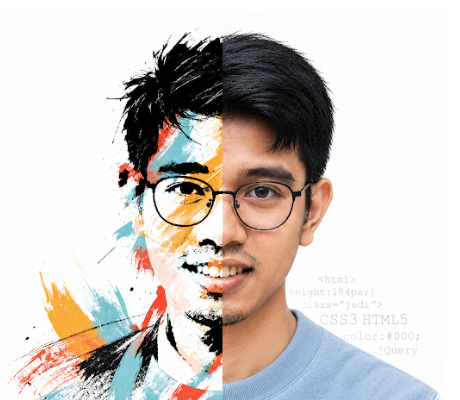

ALDRIN CAMACHO · WEBFLOW DEVELOPER & DIGITAL EXPERIENCE SPECIALIST
designer.
I shape structure, visual rhythm, and usability before a site reaches Webflow.
Explore design work ↗
developer.
I build responsive Webflow sites with scalable CMS structure and technical SEO foundations.
Technical services ↗